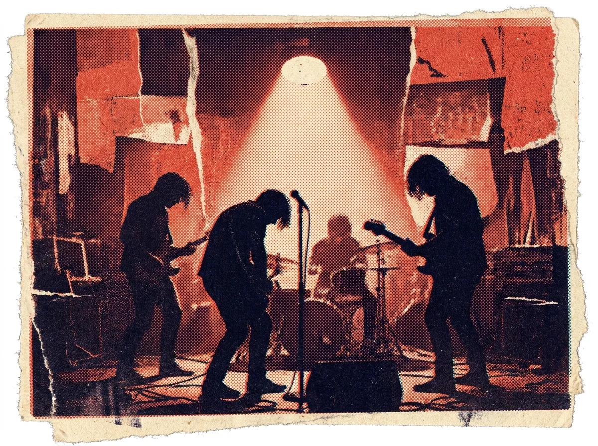

黑膠不死:當一群二十歲的孩子重新愛上轉速

凌晨一點,城南一棟老公寓的地下室還亮著燈。壓片機規律地嘶嘶作響,空氣裡有股淡淡的塑料與機油味。二十六歲的阿凱戴著手套,把一張剛冷卻的黑膠對著燈光檢查溝紋——這是他今晚壓出的第四十七張,也是他親手創立的廠牌「轉速」第一張正式發行的唱片。
「大家都說實體已經死了,」他笑著說,「可是你看,願意花一張電影票兩倍的錢、等三個月,只為了一張會卡會跳針的唱片的人,其實比想像中多。」
當「擁有」變成一種稀缺
過去十年,串流平台幾乎重寫了我們聽音樂的方式。打開手機,數千萬首歌任你取用,卻也沒有一首真正屬於你。正是在這樣的背景下,黑膠以一種近乎逆勢的姿態回到年輕世代的房間裡。根據多家獨立通路的觀察,購買黑膠的客群中,二十歲上下的比例正逐年攀升,而他們多半並非懷舊——很多人甚至沒經歷過卡帶的年代。
「他們要的不是過去,」經營獨立唱片行十二年的阿敏說,「是一種『這是我的』的確定感。在什麼都能無限複製的時代,一張有編號、會磨損、需要翻面的唱片,反而變得珍貴。」
「串流給你全世界,黑膠只給你一張唱片——但那一張,是你會真正聽完的。」
三家小工作室,三種固執
我們走訪了城裡三家自製壓片的工作室,它們的規模都不大,卻各自固執得可愛。
一、轉速:把成本攤在陽光下
阿凱的「轉速」最特別的,是它把每一張唱片的成本結構直接印在內頁:母帶、壓片、印刷、人力,清清楚楚。「我想讓買的人知道,他付的每一塊錢去了哪裡。獨立音樂不該是個黑盒子。」
二、潮間帶:只做在地創作者
「潮間帶」由三位海邊長大的女生經營,規定只發行方圓五十公里內創作者的作品。「我們想證明,在地的聲音值得被好好做成一張唱片,而不是只能放在社群平台上自生自滅。」
三、夜車:限量,而且故意不補貨
「夜車」每張唱片只壓三百張,賣完就絕版。創辦人說這不是飢餓行銷:「補貨會讓創作變成生產線。我們想保留那種『錯過就真的錯過』的重量。」
不只是音樂,是一種態度
採訪到最後,我們發現這群人談的其實很少是「聲音品質」這種發燒友式的話題。他們更在意的,是一種把音樂重新放回生活中心的儀式感——從架上抽出唱片、吹掉灰塵、放上唱針、坐下來,什麼都不做,只是聽完一面。
在一個被通知、推播與無限滑動切碎的時代,這個動作本身,或許就是一種微小卻堅定的反抗。黑膠當然不會取代串流;但它提醒了我們,聽音樂這件事,本來可以是慢的、專注的、屬於自己的。